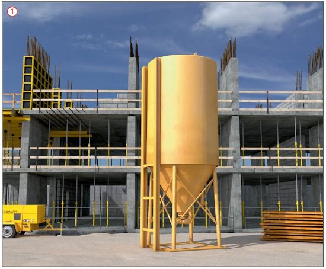
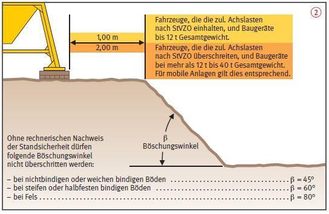

Transportable Silos |


| Erforderliche Abstützfläche (cm2) = | Stützdruck (N) |
| zul. Bodenpressung (N/cm2) |
| Bodenart | zul. Bodenpressung N/cm2 |
| Angeschütteter, nicht künstlich verdichteter Boden | 0 – 10 |
| Gewachsener, offensichtlich unberührter Boden – Schlamm, Moor, Mutterboden |
0 |
| – Nichtbindige, ausreichend fest gelagerte Böden Fein- bis Mittelsand Grobsand bis Kies |
15 20 |
| – Bindige Böden breiig weich steif halbfest fest |
0 4 10 20 30 |
| – Fels, unverwittert mit geringer Klüftung und in günstiger Lagerung |
150 – 300 |
07/2021